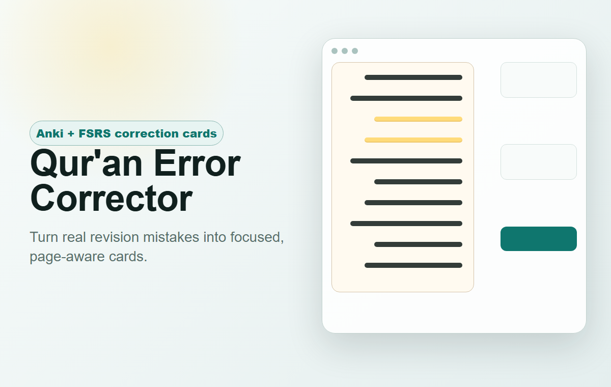
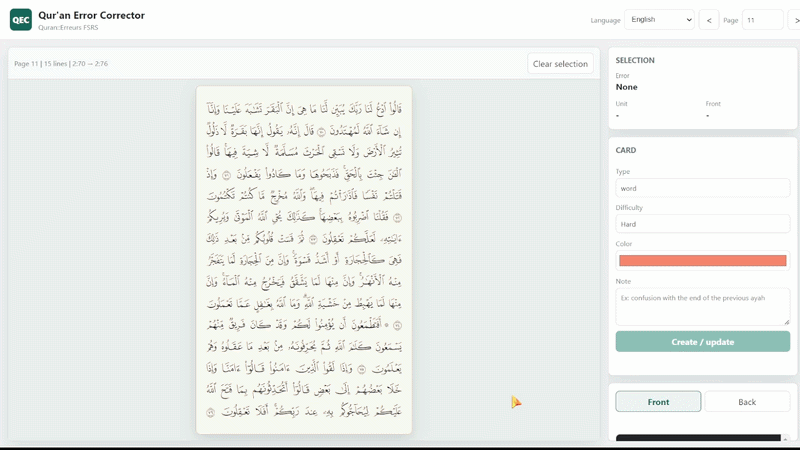
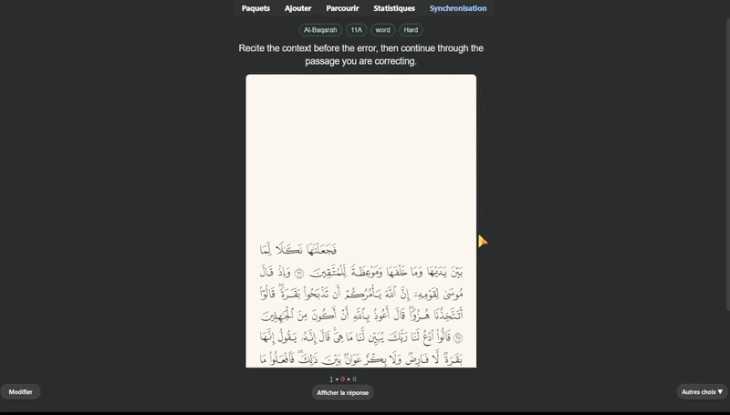
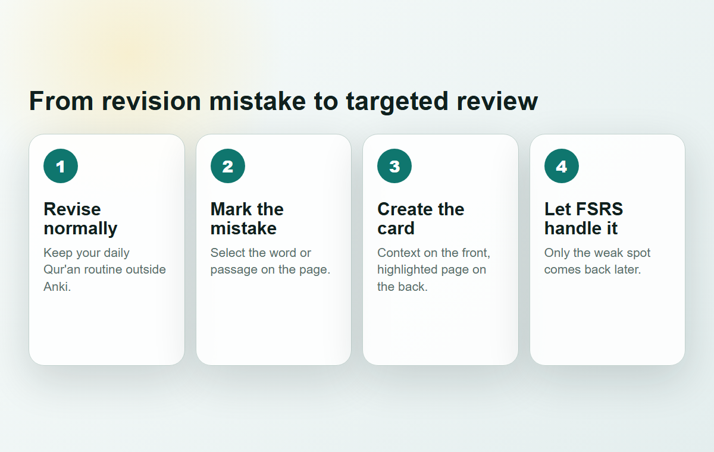
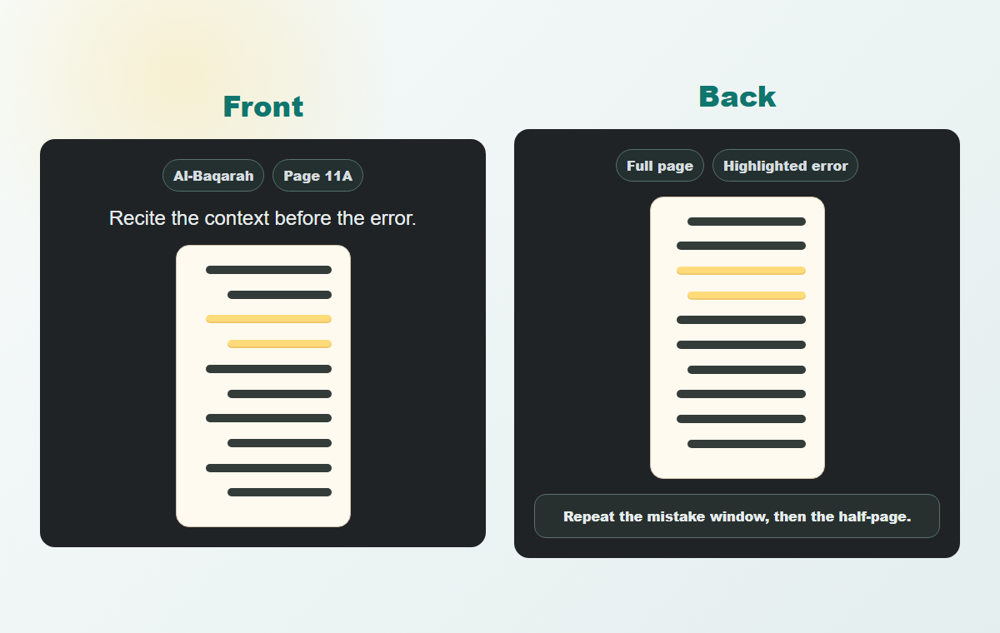

Anki add-on for Quran revision
Repair the mistakes that actually happened.
A focused workflow for turning Qur'an revision errors into clean, page-aware FSRS correction cards.
Madani-style pages
Half-page prompts
FSRS-ready
Multilingual

Demo


Why it exists
Many Qur'an students already know how much they should revise each day. What they need from spaced repetition is not another complete revision planner; it is a reliable way to revisit the exact half-pages where mistakes appeared.
Qur'an Error Corrector keeps that distinction clear. You do your normal revision. When an error shows up, the add-on creates a targeted card for that weak spot.

Card design

AnkiWeb description draft
The ready-to-copy HTML description is available here: